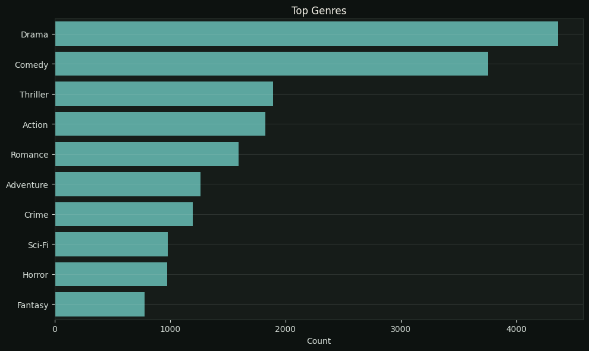
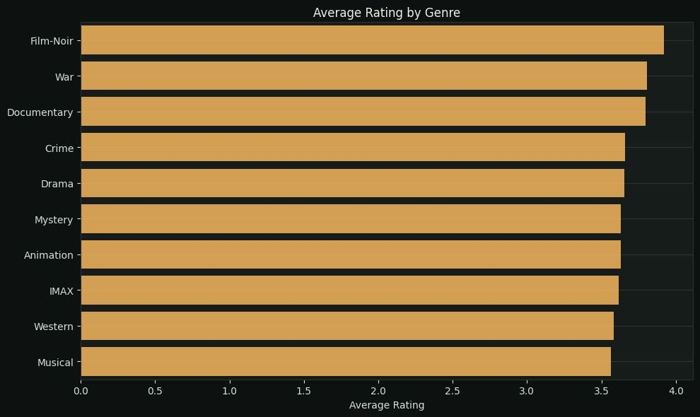
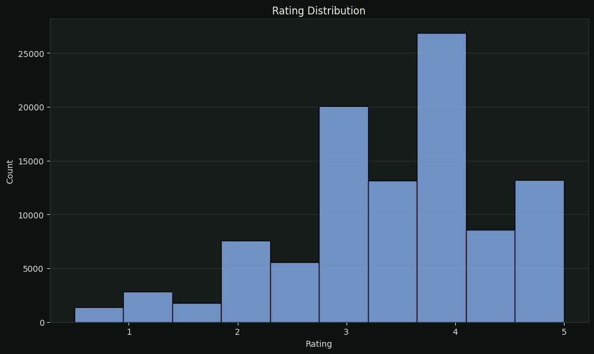
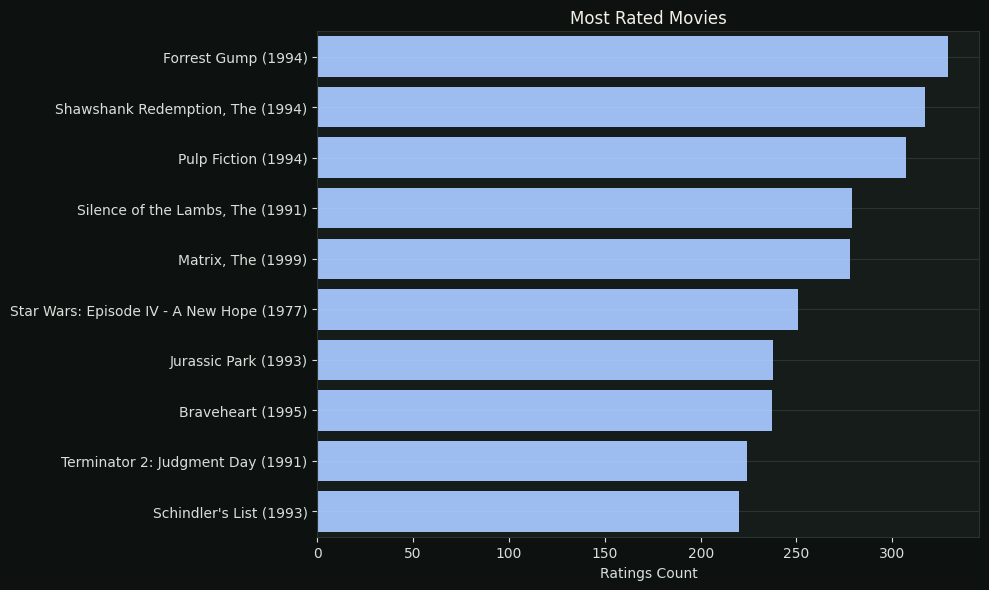

Recommendation System
Turning Movie Data Into Personalized Recommendations.
This project expands my machine learning work beyond prediction by transforming movie metadata into feature representations and using similarity analysis to generate content-based recommendations. It combines exploratory analysis, TF-IDF feature representation, and similarity analysis to identify movies with comparable characteristics.
Movies
9.742
Catalog size
Ratings
100.836
User rating records
Avg rating
3.50
User preference signal
Genres
20
Genre labels represented
Top movie
Antz (1998)
Similarity anchor
Top rec score
1.00
Genre similarity
High rating pool
10
Movies with 50+ ratings
Base model
TF-IDF + Cosine
Content-based engine
Case Study
From Movie Metadata to Similarity
The analysis combines catalog exploration with content-based similarity to show how structured metadata can support personalized discovery.




Similar Movie Recommendations
| title | genres | similarity |
|---|---|---|
| Antz (1998) | Adventure|Animation|Children|Comedy|Fantasy | 1.00 |
| Toy Story 2 (1999) | Adventure|Animation|Children|Comedy|Fantasy | 1.00 |
| Adventures of Rocky and Bullwinkle, The (2000) | Adventure|Animation|Children|Comedy|Fantasy | 1.00 |
| Emperor's New Groove, The (2000) | Adventure|Animation|Children|Comedy|Fantasy | 1.00 |
| Monsters, Inc. (2001) | Adventure|Animation|Children|Comedy|Fantasy | 1.00 |
| Wild, The (2006) | Adventure|Animation|Children|Comedy|Fantasy | 1.00 |
| Shrek the Third (2007) | Adventure|Animation|Children|Comedy|Fantasy | 1.00 |
Key Findings
- Genre provides a simple and interpretable signal for building a lightweight content-based recommendation approach.
- The rating distribution is concentrated around the mid-to-high range, providing a useful signal for understanding audience preference.
- Similarity-based recommendations make the analytical output tangible by turning metadata relationships into an interactive user experience.
Recommendation anchorToy Story (1995)
Returned items7
MethodTF-IDF / Cosine